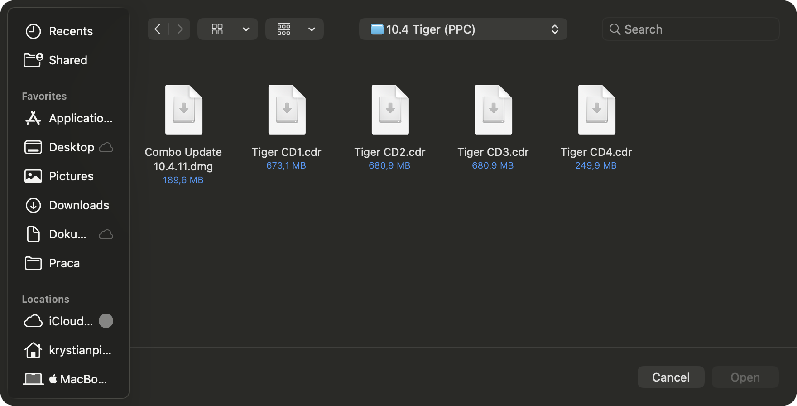
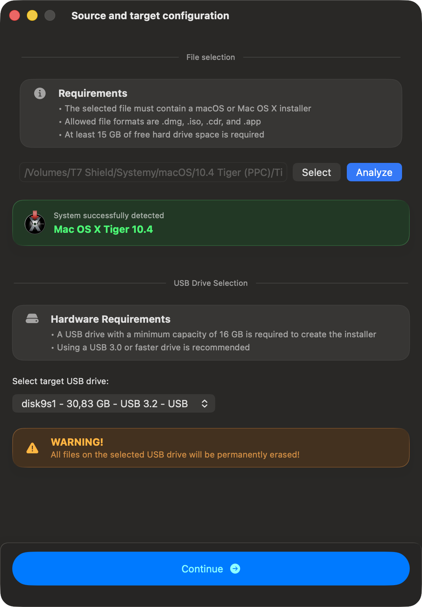
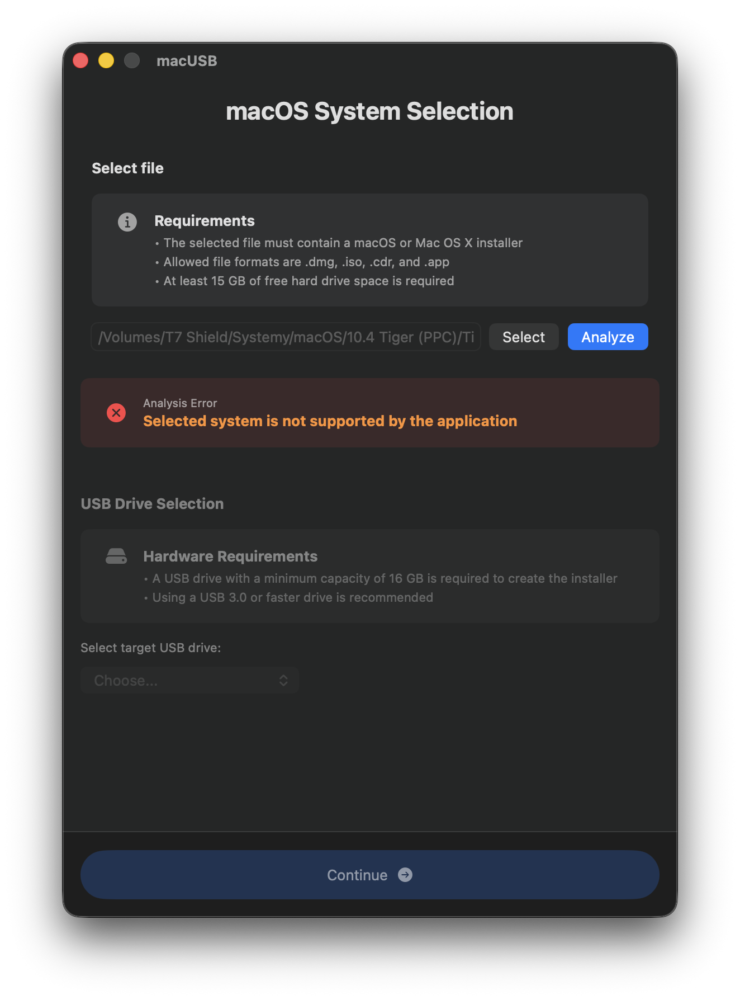
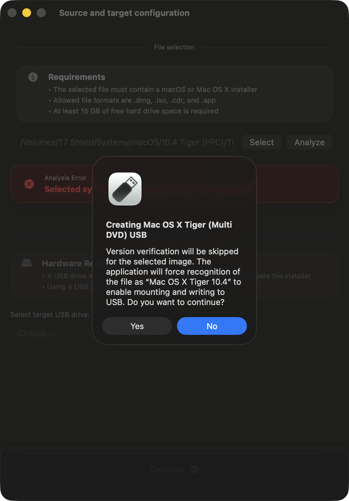
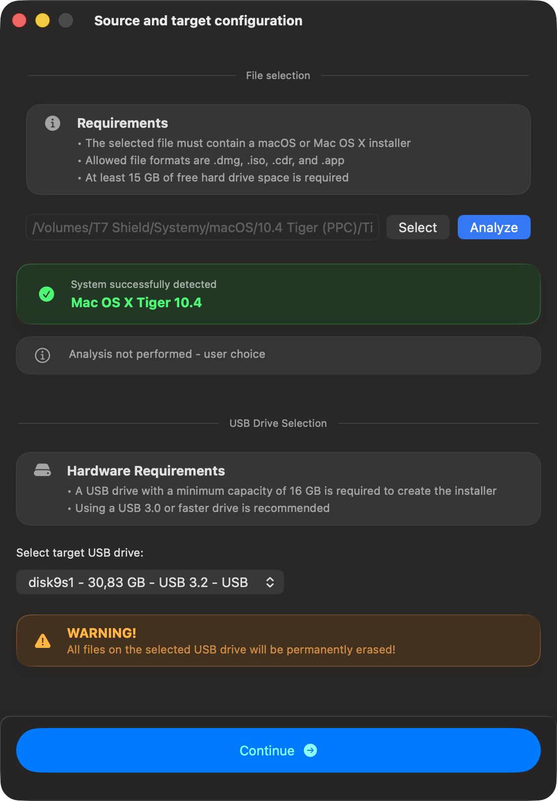
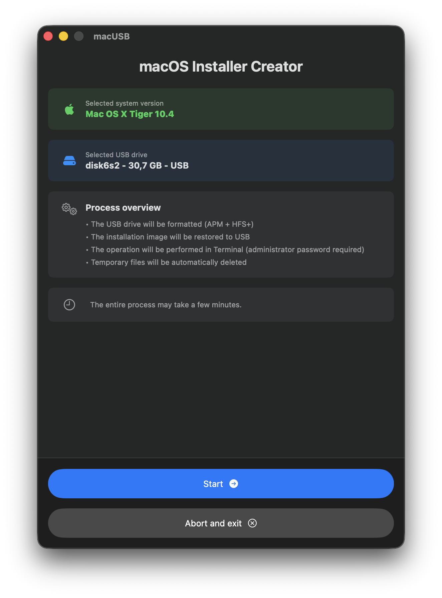

Use this guide to create a Mac OS X Tiger 10.4 Multi‑DVD bootable USB installer with macUSB.
It also covers what to do when Disc 2 (or later) isn’t detected correctly and how to switch discs during installation.
Files you’ll need
When you use a Multi‑DVD release, the installer is split across multiple disc images (for example
Tiger CD1.cdr, Tiger CD2.cdr, and so on). macUSB writes one disc image to USB at a time.
If you select anything other than Disc 1, you may need to force detection (covered below).

Click to zoom
Single-DVD edition
If you use the Single‑DVD Tiger installer, macUSB detects the system version automatically — no extra steps required.

Click to zoom
Multi-DVD edition
Follow these steps if you select Disc 2 (or any later disc) and auto‑detection doesn’t look right.
Select your Tiger image in macUSB.
If you select Disc 2 (or any later disc), macUSB may not recognize the installer — or it may detect it incorrectly
(for example: OS X Read Before You Install 1.0.0).

Click to zoom
Open Options → Skip file analysis → Mac OS X Tiger 10.4 (Multi DVD)(or use the keyboard shortcutOption (⌥) + Command (⌘) + T).
macUSB will warn that analysis will be skipped and Tiger will be forced. Confirm to continue.

Click to zoom
After confirming, Tiger should appear as recognized, with a note that file analysis was skipped by user choice.

Click to zoom
Continue normally — the creation flow stays the same.

Click to zoom
During installation: switching discs
Each USB drive you create (from Disc 1, Disc 2, and so on) will be detected correctly by the Mac during installation.
Start the installation using the USB created from Disc 1.
After Disc 1 completes, the Mac will restart automatically.
When the installer prompts you to insert Disc 2, unplug the Disc 1 USB drive and plug in the USB created from Disc 2.
Tested on iMac (Late 2006) (Intel) and iMac G5 (PowerPC).
Additional notes for PowerPC Macs
If you’re preparing media for a PowerPC Mac, booting from USB typically requires entering a command in Open Firmware.
After macUSB finishes creating the installer, you’ll see a direct link to the full boot instructions.